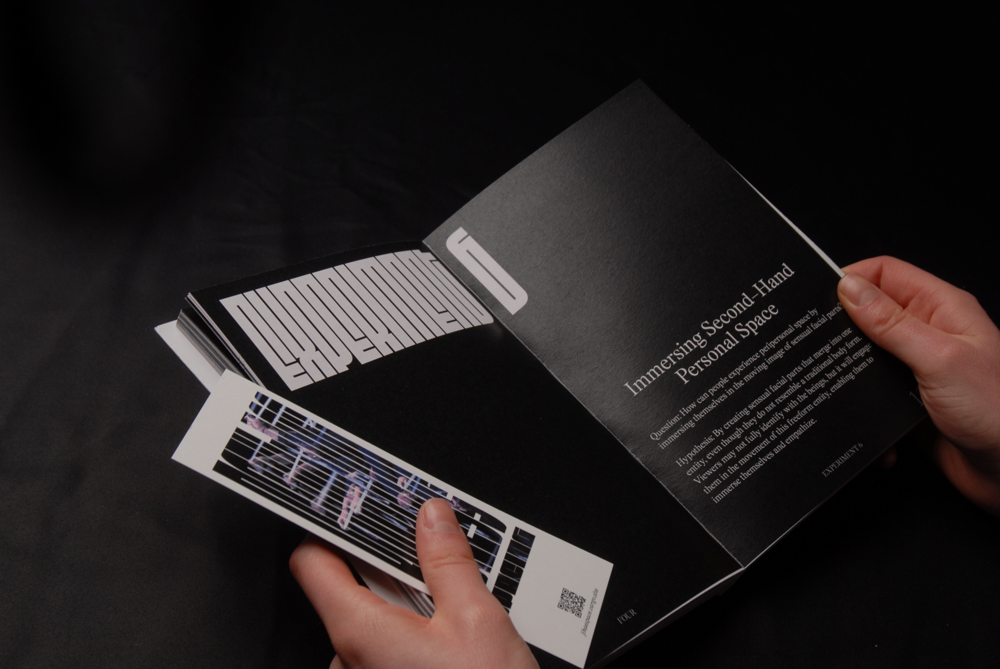

Generative Title Slide
A title slide that draws itself from the data behind it. A generator tool and the system behind it turn each deck’s own images into a cover tailored to its use case, on-brand while fitting the client’s context.
Jihae loves technology, motion and conceptual design, and her work lives where the three meet. In whatever digital form, she pictures where each element comes in and leaves, and asks why it moves and what story it tells.
More about JihaeA title slide that draws itself from the data behind it. A generator tool and the system behind it turn each deck’s own images into a cover tailored to its use case, on-brand while fitting the client’s context.
A motion-driven entry point that replaces search. Data points follow the cursor and gather into a set shaped by the user's role, so the system does the gathering while the user does the choosing.
A brand identity and website that bring a cosmetics line to Gen Z. With mature packaging and a logo already in place, the website and photoshoot close the gap to a younger audience, vintage in feel but modern in tone.
An AI companion for the seconds before an impulse purchase. It opens a conversation when someone lingers in a shopping app, pairing that interruption with longer-term reflection on where the spending comes from.
A speculative metro environment where space is given on invisible terms, made for my graduation show at the Royal Academy of Art, The Hague. Personal space is shaped by gender, identity, financial status and more, yet on public transport it is handed out by size and appearance.
A thesis that asks how personal space can be materialized, through experiments in physical and digital space. In the book's design, the distancing between letters, lines and elements gives the static page a sense of motion, so the book performs the distance it describes.

The identity for the 2024 Interactive/Media/Design graduation show. The students become the slash, tilting between the digital and the physical.